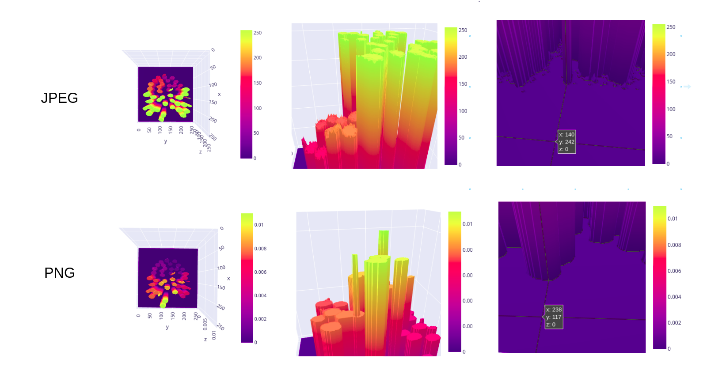
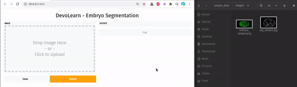

GSoC - Coding Period Week 1
This blog post showcases what I did last week and what I plan to do next.
Work Done This Week :
1. JPEG or PNG?
-
Last week I was able to convert the
.tiffiles from the cell-tracking-challenge dataset into NumPy arrays. The next goal was to save these NumPy arrays as image files. -
Here’s where I made a mistake, I saved the images as
.jpegfiles. -
What I didn’t know is that JPEG is a lossy compression method, it changes pixel level values as long as it “looks good” to the human observer.
-
I used plotly to zoom into the saved
.jpegfiles, and noticed that the edges of the segmentation masks were noisy, then I plotted the images in 3D, with z axis as pixel value.

-
Turns out, JPEG is a lossy compression method - it is designed to save images using less bits even if it changes the pixel values as long as it “looks good” to a human observer.
-
I decided to save the images in
.pngformat; PNG is a lossless compression method. -
Each
.tiffile contains 3D data (as slices) from a single instant of time, I’ve named the corresponding.pngfiles accordingly.features/F{time-point}_{slice}.pngsegmentation_maps/L{time-point}_{slice}.png
-
Link to code:
2. Defining The Dataset and Dataloader in PyTorch:
- I did not want to use
torchvision.datasets.ImageFolder()for the dataset class. - The filenames (both features and labels) contain the time-point and slice number, which could be used to identify unique feature-label pairs.
- I created a Pandas DataFrame that contains these unique id’s and saved it as a csv file, using which the custom dataloader loads valid feature-label pairs.
3. Experimenting with Gradio:
- Gradio has been all over the ML community lately, I decided to give it a try.
- The Gif below showcases a simple GUI (prototype) for the existing DevoLearn embryo segmentation model.

- This still needs a lot more work. I’ll try to resume work on this after I’m done with the proposed work for next week.
Planned:
- Upgrade the existing embryo segmentation model.
- Spend more time on the GUI for the existing segmentation model.
- Look into ways of hosting PyTorch + Gradio based apps online.